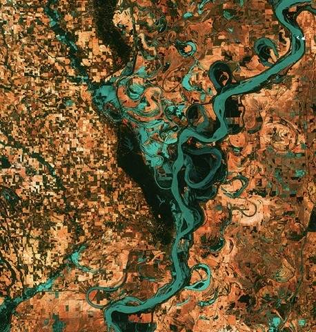
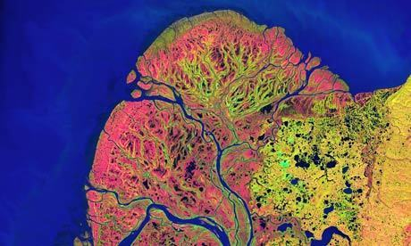

Sun, 21 Nov 2010 05:46:00 · earth · space · art
Earth as Art exhibition: A Technicolour Dream World

^ The Mississipi River

^ This is a section from an image taken by Landsat 7 of the Yukon Delta in Alaska… Doesn’t it look like a human heart?
–
Yes, our good ol’ Earth can be a refreshingly charming Art exhibition, especially if seen from outer space. See here for some extra awesomeness.